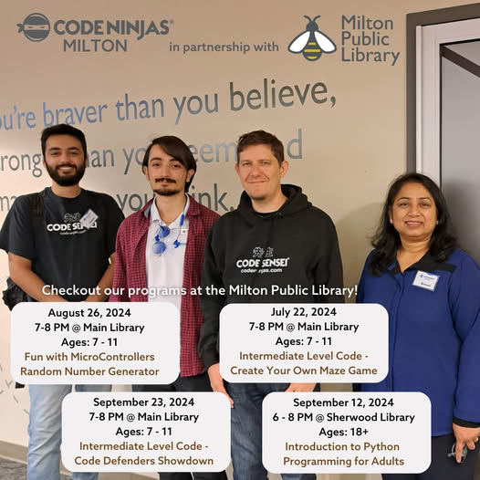

This is a 2D platformer game, currently under development for PC.
I am the Lead Unity Developer and the Project Manager for the small multidisciplinary team
responsible for this game's development.
I was the Lead Unity Developer for this 2D-isometric "city-builder" for Android and iOS. I collaborated closely
within a small agile team of Gameplay Designers, UI/UX designers and Project Managers.
This is a small game I challenged myself to make in a couple of days. The game was based on a real-life challenge
from the TV reality series "Survivor". The game went viral on itch.io shortly after being launched.
This game was a surprising technical challenge, not only due to its recursive algorithms for ball popping,
but due to the requirement for the game to be embedded into a native Swift app, utilizing Unity as a Library (UAAL).
I teach aspiring game developers on YouTube how to make this simple 2D platformer game through a series of videos.
I have prototyped all of the code and teach it in a proper, easy to comprehend manner.
This is a prototype I am developing, putting a new twist on the classic Arkanoid game. It Requires
the player to swap between 2D and 3D gameplay to proceed.
2D and 3D controls
Object pickup system
2D and 3D mixed-physics
Probuilder level design
Baked and mixed lighting
Callback methods
1st and 3rd person mixed gameplay
Reflection and light probes
Portal Galaxy
This was one of my earliest Unity projects; a treasure collecting marathon. The game was optimized for Android
and contained a variety of fun modes.
I created this game as a challenge to myself to (a) create a game using my own hand-drawn art. And (b) to create a simple
game quickly that I could publish. The result, was Toby Can Snowboard.
Below are samples of code I have written so you can get a better understanding of my style, knowledge, and how I organize code.
Detecting Input Type
I wrote a custom script to detect keyboard vs. joystick vs. touch input in Unity's legacy input system. This is especially helpful
if the player switches from a joystick to a keboard mid-session.
I wrote a custom UI manager script to instantiate menus as prefabs from the resource folder and then load them dynamically
through generic methods. This makes menu handling extremely efficient throughout an entire project.
Adding sounds (and making them consistent) for button clicks is frusterating. That's why I created this custom
ButtonSounds.cs class to make playing sounds from button clicks a breeze.
This is an example of how I would go about setting up a state machine using an enum and a static Action.
Simple and highly efficient for managing any kind of state.
I am experienced with the DoTween plugin and use it to animate UI elements and gameplay. Here is how I have set up
a custom (reusable) menu component script to handle on/off animations.
Here is how I may set up some basic player movement using the legacy input system, and clamp the character to the screen
(assuming it's a single screen game).
I started teaching Unity to kids, part-time at Code Ninjas Milton in 2023. I guide our Ninjas through a variety of 2D and 3D
projects, providing support, mentorship and guidance, explaining both programming concepts and answering questions about
using Unity.

Workshops
Part of what I do is also working with the Milton Library and Community Resource Centre to setup and present coding workshops.
Awards
Another part of my job is presenting awards to our black belt graduates. This was a speech I delivered to our centres'
first two graduates in 2024.
Teaching Game Dev on YouTube
I operate a YouTube channel called 'Wild Cockatiel Games' (previously 'Unity Game Programming for Beginners') where I create
coding tutorial for C# and game development for Unity. The channel has over 3,000 subscribers and more than 150 videos on a variety
of game development subjects.
Below are a few choice selections of videos I am particularily proud of and have performed well.
How to Use Dictionaries
This video is from 2021 and has received over 10,000 views.
Thank you for this video...very well explained. I was looking for "lists" and ended here instead...glad I did, because I think "dicts"
are what I need to be using. Instead of trying to remember which index # to use for my values, I just use a description that is easy to remember.
Again, thank you.
Animated Line Renderer
This video has also received over 10,000 views. I couldn't find a decent tutorial that explained how to do this,
so I figured it out on my own and then created a tutorial on the subject.
That is a really neat way to animate the line ... sweet!
You know that I love Unity because of the community and content like this, thanks!
Particles on the UI
This is a subject I also find frusterating in Unity so I made a tutorial for it. The video is fairly recent
and has steadily picking up steam.
Dude... you know when you find out what is the problem and you know the solution, but the engine simply does not have an built in solution for that?
And then you first try to find if anyone got the solution for it first and you NEVER find it? Not in this case cuz the second approach was EXACTLY what
I was trying to find. thank you SO MUCH!
How to Send Variables Between Scenes
This video from 2020 is one of my channel's most successful, sitting at over 50,000 views. The video primarily demonstrates how static
variables persist through scene changes in Unity.
If I were to remake this video today I would show alternative ways of sending variables between
scenes, such as PlayerPrefs, ScriptableObjects and Serializeable classes. Still, many people found it helpful with this basic explanation.
Thanks for this, all of the other tutorials are the same copy paste setting of quality, resolution
etc and don't handle making variables available for game objects, this is really useful.
How to Make a Game In Unity
This is the first video in an ongoing approx 20 video long series where I detail how to make a complete 2D platformer game in Unity. The comments
below are from various videos throughout the series, including this one.
IT LOOKS SOO COOL
Im working on a school project and this helped mee soo much!! Good work!
This deserves more views and likes
Just wanted to say you are my favorite tutorial youtuber! Thanks for the clear and very well made videos you make. They make my life 10 times easier
Parallax in Unity
This video shows how to set up a Parallax in Unity 2D. It's part of the same "How to Make a Game in Unity" playlist series.
Change Animation Speed
This video gives a quick and simple explanation for how to adjust animation speeds in Unity.
Please feel free to reach out to me by phone or email if you have any questions or feel like I would be a good fit for your studio.
I am open to Unity Developer, C#/.NET Developer, Project Manager, Product Manager and Product Owner positions.